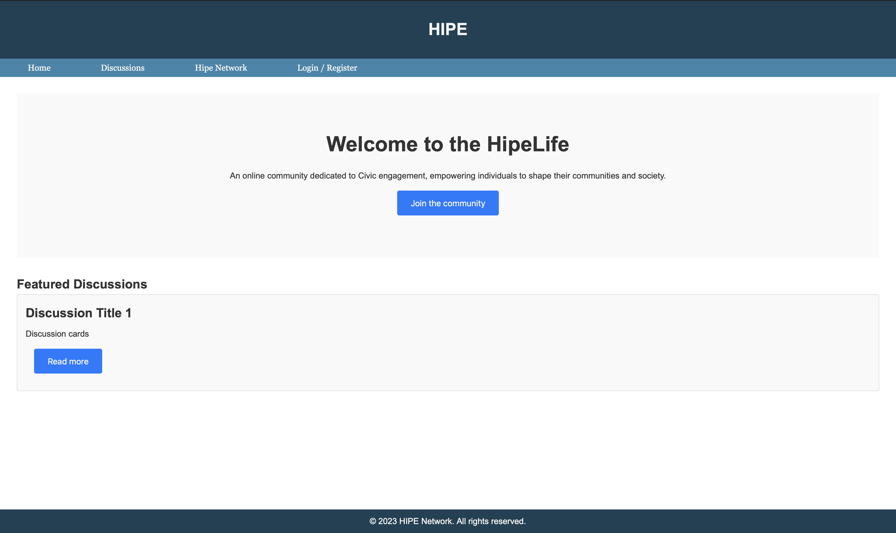

Hi, I'm Pujan Patel
Student, aspiring software engineer and web developer.
Get to know me
Hi, I am Pujan Patel and I'm an enthusiastic web-developer with a passion for creating engaging and secured software.
I'm an undergraduate student at CUNY Baruch College via Macaulay Honors College with an intended major in Computer
Information Systems. I aspire towards a career in Tech which will allow me to showcase my creativity and problem solving skills.
My other interests include: watch and play sports: Soccer, Cricket, Football, Volleyball, Ping-Pong, Ultimate frisbee, and basketball, watching TV-shows and movies, hanging out with friends.
Skills
- Python
- HTML
- CSS
- JavaScript
- C++
- SQL
- Java
- Linux Command Line
- Numpy
- Pandas
- React.Js
- Boostrap
- NIST CSF
- Github
- Jupyter Notebook
- VS Code
- Xcode
Projects
Broadway Next

A web-app with a purpose of allowing users to browse, search, and purchase tickets for live shows. It was a collaborated project created for our Hackathon at CUNY Tech Prep. The app was developed using Next.Js, MongoDB, Tailwind CSS, nextAuth, hosted on Vercel and version control via GitHub.
HipeLife
A front-end only website that represent a discussion page with a main focus civic engagement. The website was created using HTML, CSS, and JavaScript with version control on GitHub and deployed using GitHub pages.
Relevant Work Experience
CUNY Tech Prep, Software Development Fellow
Selected for a competitive web development fellowship with students from across the 11 CUNY senior colleges where Fellows create technical projects using tools such as React, Node + Express, and PostgreSQL.
Grove School of Engineering at CCNY, Front-End Developent Intern
Designed and developed a website focused on civic-engagement using HTML, CSS, and JavaScript that fosters meaningful conversations and community involvement using discussions, while aligning its goals with HipeNetwork's mission.